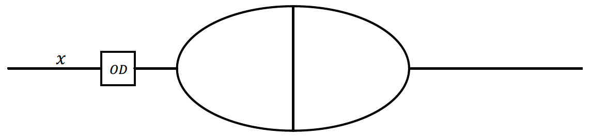
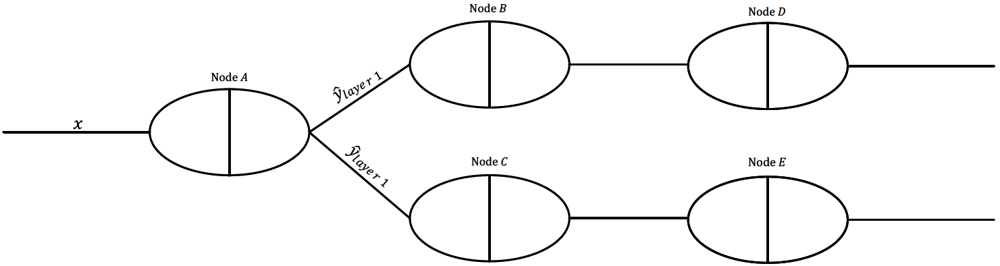

Principles of Visualizing Data
Practice of Data Visualization
Gradient Descent Search and Regularization
Data science is a field of study that combines domain knowledge, computer programming skills, and knowledge of mathematics and statistics to extract meaningful insights from data (e.g., healthcare data, business data, etc.) Data science is also defined as a multidisciplinary field that uses scientific methods, processes, algorithms and systems to extract knowledge and insights from many structured and unstructured data. The science is related to data mining, machine learning, and big data. It is a "concept to unify statistics, data analysis and their related methods" in order to "understand and analyze actual phenomena" with data. Data science uses techniques and theories drawn from many fields within the context of mathematics, statistics, information science, and computer science.
 
Caleb Princewill Nwokocha is also a student at the University of Manitoba.